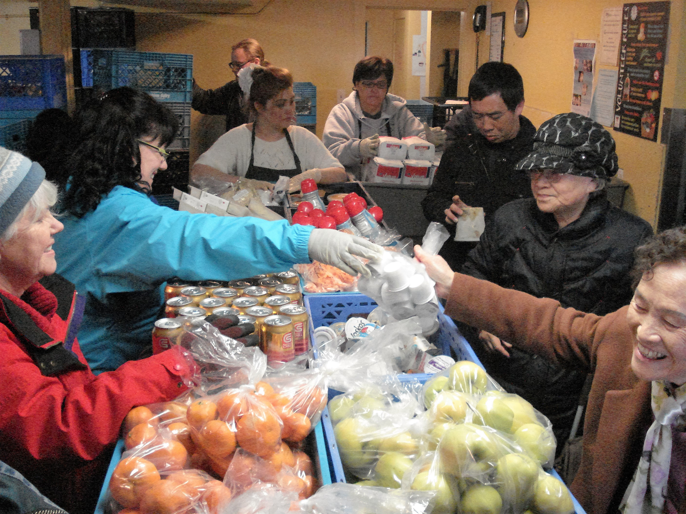

The Food Bank @ St Mary's
"Since the 1940s, The Food Bank @ St Mary's has been supporting Seattle and the surrounding community with hospitality, respect, and nutritious food. In 2019 alone, the Food Bank @ St. Mary’s distributed nearly 3 million pounds of food by: serving more than 162,000 household visits, providing nearly 15,000 bags of groceries to children and their families in local schools, and recording 24,000 hours of volunteer time" -The Food Bank @ St Mary's
Website
Address
611 20th Avenue South Seattle, WA 98144
Phone Number
206-324-7100
Open/Closed Status
Open
Hours of Operation
Monday, Wednesday, and Friday: 10:00am – 1:00pm